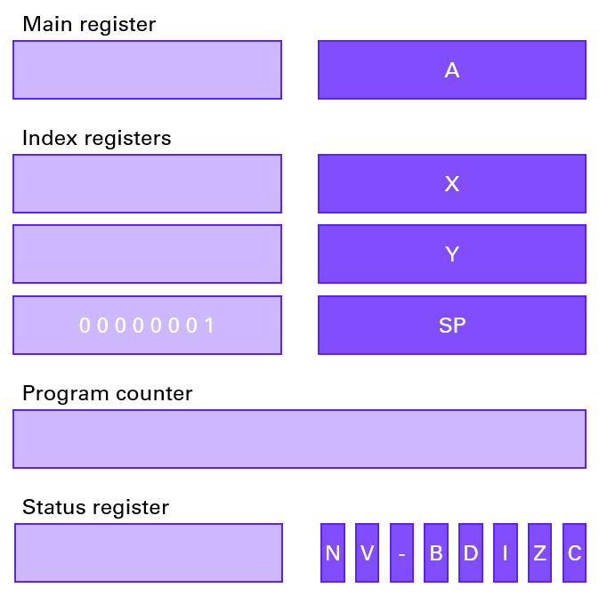

Chicken run: an assembly project
Abstract
Meet Ghunter, the anxiety packed chicken! Years past after Ghunter lost his son to a flower allergy. His wife got into a cloud overdose not long after that... Now both the flowers and clouds have returned to finish their job on the miserable Ghunter! Try to dodge a smany pesky flowers and clouds as possible to keep Ghutner alive!
The project
In this project I learned the basics of writing assembly code and how to work with a MOS 6502 simulator. I think for me this was a most interesting topic as getting to know how everything works low level is I think one of my many interests in programming. This is why I absolutly loved working on it.
The simulator
The simulator is memory mapped:
- Display
- top left corner: $0200
- nottom right corner: $05FF
- Stack pointer
- start: $0100
- end: $01FF
Registers
- A accumulator register.
- X,Y index registers.
- SP stack pointer.
- PC program counter
- P 7 processor status flag bits
- N negative > if bit 7 is set.
- V overflow > if sign bit is incorrect.
- B break > not affected
- D decimal > not affected
- I interrupt > not affected
- Z zero > set if A == 0
- C carry > set if overflow in bit 7
The most important flags are the zero and carry flag.
Assembly: the baby steps
The difference between #$01 and $01
If you use LDA #$10; then you will store the hexadecimal value $01 in register A. If you use LDA $01; then you will store the hexadecimal value in memory place $01 in register A.
Most used instructions
- LDA - LDX - LDY Load number into register A-X-Y.
- STA Store number in given memory address.
- TAX - TAY Transfer value in register A to register X-Y.
- ADC Add with carry to register A.
- SBC Substract with carry from register A.
- INX - INY Increment register X-Y.
- INC Increment value in given address.
- DEX - DEY Decrement register X-Y.
- DPX - CPY - CMP Compares register X-Y-given address with a value in a given address. This operation can se the flags N, Z and C if approopriate.
Addressing modes
There are a lot of different addressing modes. The most standard one is absolute addressing, this is when you fully give the address.
A variant on this is the zero page addressing mode, this is actually single-byte addressing. This will work faster than absolute addressing because you only have a 1 byte lookup.
It will also take less space in code. The only drawback about zero page addressing is that this only work for the first 256 bytes, e.g. the first page.
When we talk about immediat addressing then we use the actual values instead of with the memory addresses.
Relative or label addressing is used mainly for branching.
With implicit addressing, you work with instructions that don't deal with memory locations but with registers, this means that the argument is implied by the instructions.
Another one is that one can use indirect addressing. This means that you use an absolute address to look up another address.
The first address will then be the least significant byte and the following byte will be the most significant byte.
Branching
If we want to use branching we need to be able to mark certain points in a program, this can be done by labeling.
A label is a single-byte relative offset; this means you can go forward and backwards with 256 bytes.
You could compare branching in assembly with an if statement in C++ code.
Labeling is also used to move around in local code, a.k.a. jumping.
There are different ways to branch:
- BBC - BCS Branch if carry clear - set.
- BEQ - NBE Branch if equal - not equal.
- BMI - BPL Branch if minus - positive.
- BVC - BVS Branch if overflow clear - set.
Jumping
Jumping is the same as branching but it is unconditionally executed and it has a 2-byte absolute address. There are 3 common instructions JMP(label) this jumps to the label. And then you have the dynamic duo JSR and RTS, these two mimic functions. The JSR instruction will push address minus one of the next instruction onto the stack. Then the RTS will pop this location and will jump to the location plus one.
The stack
The stack is always an important thing in programming. Values are pushed onto it and popped off it. The current depth of this stack is measured by the stack pointer. There are 2 stack instruction namely PHA which means push accumulator and PLA, pull accumulator. These instructions only work with register A.
Results
I made this project together with Celine Vandewalle. I stood in for:
- Background implementation.
- Start and pause button.
- Further implementation of Ghunter the chicken.
- Cloud implementatio
Links
Where I got the knowledge:
- Tutotial + simulator can be found at skilldrick's easy 6502 site.
- Instruction set information can be found at both 6502.org and obelisk.me.uk.
- General information about the MOS 6502 can be found at the wikipedia site.
To see the assembly code in detail I kindly refer to the github repository.